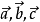

向量加绝对值什么意思
2009-06-14
是表示这两个向量是相等（或相反）向量吗？在向量的线性运算中|向量a|=|向量b|，只是指它们的模相等吗？和位置有关吗？
向量加绝对值百不是表示这两个向量是相等（或相反）向量，向量加绝对值是表示向量的大小，也就是向量的长度(或称模)，记作|a|。注：1、向量的模是非负实数，向量的模是可以比较大小的。2、因为方向不能比较大小，所以向量也就不能比较大小。对于向量来说“大于”和“小于”的概念是没有意义的。扩展资料一般印刷用黑体的小写英文字母度（a、b、c等）来表示专，手写用在a、b、c等字母上加一箭头（→）表示，如，也可以用大写字母AB、CD上加一箭头（→）等表示。在平面直角坐标系中，分别取与x轴、y轴方向相同的两个单位向量i，j作为一组基底。a为平面直角坐标系内的任意向量，以坐标原点O为起点P为终点作向量a。由平面向量基本定理可知，有且只有一对实数（x,y），使得a=xi+yj，因此把实属数对(x,y)叫做向量a的坐标，记作a=(x,y)。这就是向量a的坐标表示。其中(x,y)就是点p的坐标。向量a称为点P的位置向量。参考资料来源：百度百科-向量
